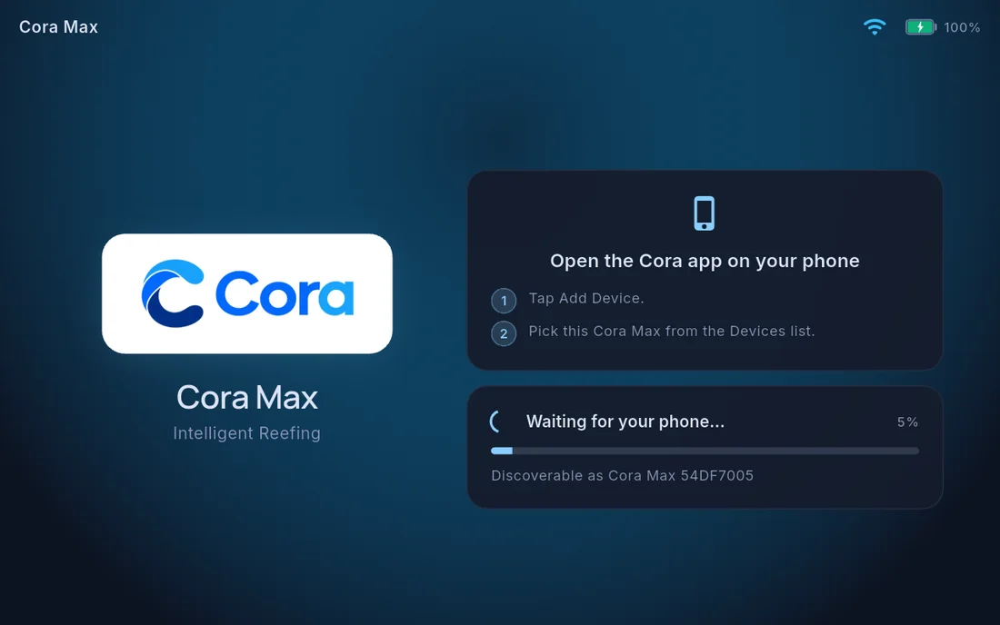
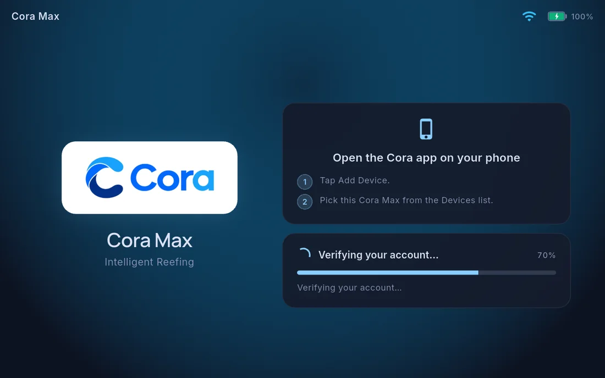

Setting up Cora Max
Cora Max is the command centre for the reef room — a wall screen showing your live system, readable across the room, that also takes voice.
What you need
- Cora Max, powered
- Your Wi-Fi network name and password
- The account you use for Cora Mobile
Setup is driven from your phone
Power the unit on. It shows a pairing screen and advertises itself — it does not ask you to type anything.

The screen shows the name it is discoverable as, ending in a short identifier. If you are pairing more than one unit, that identifier is how you tell them apart in the list on your phone.
Everything else happens in Cora Mobile, as five named steps you can see across the top of the sheet: Connect · WiFi · Auth · Tanks · Done.
1 · Connect. Devices → Add Device on your phone finds the unit and shows what it found — its MAC address, firmware version, variant and hardware revision — so you can confirm it is the right one before continuing.
2 · WiFi. Pick your network from the list, or Rescan, then enter the password. You are typing it on a phone keyboard rather than a wall screen.
3 · Auth. Your phone authorises the unit against your account. The Cora Max shows its own progress while this happens.

4 · Tanks. Choose which tanks this screen manages — up to four. Each is listed with its name and type.
5 · Done. The screen confirms it is provisioned and gives you a Recovery PIN.
Follow the on-screen instructions to link it to your account. Cora Mobile will confirm when the pairing succeeds.
Changing which tanks it shows
Tank assignment belongs to the pairing, and is changed from your phone — open the unit in Devices and edit its assigned tanks. It is not changed from the Max's own settings.
Building the dashboard
Cora Max builds its own starting layout from your tank profile — it does not copy the one on your phone. To change it, the easiest route is from your phone: Devices → your Cora Max → Edit Dashboard, which is quicker than arranging tiles on a wall.
The big-screen dashboard works differently from the phone — a fixed grid that all has to fit on one screen. See Editing the Cora Max dashboard.
Updates
Cora Max updates itself. When a new version is available it downloads in the background and applies it, and tells you what changed.
You can check where you are under Settings → Cora Max.
Moving it to a different network
Settings → Cora Max → Network → Wi-Fi. Pick the new network and enter the password. Pairing survives the change — you do not need to set the screen up again.
Written for Cora Max 0.28.38 and Cora Mobile 0.5.55.
Still stuck? Email cora@coraiq.tech and we'll help.